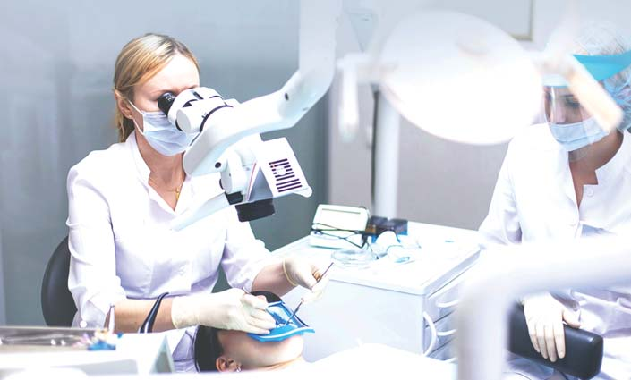

Своя справа · журнал «ДентАрт» 2015 №3
Професійна етика проведення складних випадків ендодонтичного лікування з використанням мікроскопа
PROFESSIONAL ETHICS IN TREATMENT OF COMPLEX ENDODONTIC CONDITIONS USING MICROSCOPES
Мікроскоп у стоматологічній практиці використовується останнім часом усе частіше, проте в деяких випадках необґрунтовано і тому безуспішно. Річ у тім, що багато фахівців не знають реальних можливостей його застосування і не мають достатнього клінічного досвіду роботи з ним. Нерідко знання стоматологів складаються на основі рекламної інформації, яка агітує фахівців за придбання мікроскопів і занадто розширює спектр показань до їх застосування. Інше джерело знань про можливості мікроскопа — виступи на конференціях та наукові публікації просунутих фахівців з прикладами ефективного лікування при застосуванні мікроскопа в складних клінічних ситуаціях. При цьому не згадуються випадки, коли використання цього засобу візуалізації в ендодонтії не веде до досягнення бажаного результату з об'єктивних причин. У підсумку у лікарів, які не мають власного досвіду роботи з мікроскопом, створюється неповне або оманливе уявлення про його мало не безмежні можливості. Стоматолог, який тривалий час вдумливо працює з мікроскопом, поступово починає розуміти його переваги в тих чи інших клінічних ситуаціях, а також визначати клінічні випадки лікування каналів, коли мікроскоп не дозволяє досягти ефективних результатів. На основі досвіду приходить усвідомлення обмежень і протипоказань до застосування мікроскопа.
Ось основні висновки, зроблені нами:
- за допомогою мікроскопа можна бачити лише те, що перебуває в зоні прямої видимості і на глибині кореневого каналу, на яку проникає світло;
- відносно нескладно за допомогою мікроскопа виявити устя каналів, як основних, так і додаткових, якщо вони містяться в зоні, яка добре проглядається, на дні порожнини зуба;
- легко виявити на дні або стінках порожнини зуба перфорації, тріщини;
- добре бачити потрібну ділянку кореня і одночасно проводити маніпуляцію можна далеко не завжди, оскільки буває, що інструменти закривають огляд;
- верхівкова частина каналу може бути недоступна для огляду в мікроскоп, особливо якщо це канал вузький і викривлений, але саме в таких каналах найчастіше і виникають ендодонтичні проблеми;
- з мікроскопом значно легше розпломбувати канал, при цьому різко знижена небезпека пошкодження стінки кореня;
- якщо в каналі утворилася «пробка» з дентинної стружки або є невеликий уступ, то проходження і подальша адекватна обробка неможливі;
- успішність видалення з кореневих каналів відламаних ендодонтичних інструментів із застосуванням мікроскопа залежить від місця їх перелому — в устьовій, середній чи верхівковій частині каналу;
- відламаний ендодонтичний інструмент можна витягти лише в тому випадку, якщо його видно і є можливість доторкнутися до нього іншим інструментом;
- у верхівковій частині і за ділянкою викривлення каналу витягти відламаний інструмент практично неможливо;
- нездійсненні завдання при роботі з мікроскопом — проходження повністю облітерованих і викривлених каналів, а також каналів, що мають множинні дельтоподібні розгалуження у верхівковій частині кореня.
Не кожна клініка має у своєму розпорядженні мікроскоп, і тоді стоматологи направляють пацієнтів для лікування в ті стоматологічні установи, які придбали цей засіб візуалізації ендодонтичних проблем. На перший погляд, це правильна тактика співпраці колег, але тут виявляються серйозні проблеми.
По-перше, лікарі, які погано собі уявляють суть роботи з мікроскопом та обмеження цього методу візуалізації ендодонтичних проблем, неправильно інформують пацієнтів, посилаючи їх у спеціалізований ендодонтичний кабінет. Якщо стоматологи мають завищені очікування від застосування мікроскопа, то створюють завищені очікування у пацієнтів у складних клінічних ситуаціях: «Зверніться в клініку Х, у них є мікроскоп, там ваша проблема буде успішно вирішена». А якщо за допомогою мікроскопа завідомо неможливе ефективне лікування або ймовірність успішного лікування під питанням, то навіщо обнадіювати пацієнта, задаючи неправдиву установку? Адже мікроскоп — це не «чарівна» методика лікування, а лише інструмент збільшення чи виявлення відхилень від норми і більш ефективного виконання маніпуляцій. Коли пацієнт приходить у просунуту клініку і чує, що мікроскоп в його ситуації не допоможе, його реакція, природно, негативна, він вважає, що стоматолог, який обіцяв ефективне лікування, обдурив його, або в клініці, куди він звернувся, працює поганий фахівець. Таким чином, якщо один колега необґрунтовано або із завищеними очікуваннями направляє пацієнта до іншого колеги, то перший, прямо кажучи, підставляє другого. Це порушення професійної етики.
По-друге, пацієнти, які прийшли за направленням лікаря для продовження лікування з використанням мікроскопа, часто виявляються конфліктними, поводяться агресивно, нав'язують стоматологові свою думку. Їх можна зрозуміти: сучасна стоматологія, вважають вони, безсила допомогти їм, лікарі нібито «ганяють по колу», не хочуть брати на себе відповідальність за результати лікування. Таким чином, необґрунтована установка на ефективне лікування із застосуванням мікроскопа, створена у пацієнта недосвідченим стоматологом, підриває престиж стоматології.
По-третє, як показує наш досвід, пацієнти, спрямовані на лікування з використанням мікроскопа, нерідко мають особливий психологічний статус, що ускладнює спілкування з ними. Вони недовірливі, дуже тривожні і при цьому вважають, що «купують» гарантований результат, до того ж вони зазвичай обмежені коштами. Виникає підозра, що лікар, направляючи такого пацієнта на лікування з мікроскопом до колеги, таким способом позбавляється від психологічно важкого споживача послуг. Щоб пацієнт не думав так і повірив своєму лікареві, треба, посилаючи його на лікування з мікроскопом, підкреслити, що ви стурбовані тим, щоб зробити все можливе для досягнення ефективних результатів лікування.
По-четверте, лікар не завжди правильно і переконливо аргументує необхідність звернення до фахівця, озброєного мікроскопом, в результаті пацієнт може «запідозрити» свого лікаря у невмінні виконувати лікувальне завдання. Слід брати до уваги стоматологічний досвід пацієнта: раніше хто-небудь зі стоматологів успішно лікував його без мікроскопа, а цей лікар має труднощі, отже, він недостатньо професійний і маскує цей факт, відсилаючи на лікування з мікроскопом.
Щоб таких думок у пацієнта не виникало, завжди треба пояснювати:
- у чому полягає проблема;
- навіщо конкретно потрібен мікроскоп у цьому випадку;
- яка ймовірність успішного лікування в цій ситуації з використанням мікроскопа.
По-п'яте, практика направлення пацієнтів в іншу клініку для лікування із застосуванням мікроскопа часто засвідчує брак культури професійної взаємодії між фахівцями.

Взаємодія лікаря і ендодонтистів. Лікар не повідомляє колезі, який лікуватиме з мікроскопом, необхідну інформацію про клінічну ситуацію пацієнта, який направляється: про виниклі складнощі лікування, обсяг уже виконаної роботи, поставлене завдання. Ці відомості необхідні для розуміння іншим спеціалістом ситуації, успішного продовження лікування, зміцнення контактів з пацієнтом і, що дуже важливо, для демонстрації наступності стоматологів різних клінік. Нерідко двом фахівцям — тому, хто направляє на лікування з мікроскопом, і тому, хто продовжує лікування, — треба обговорити клінічний випадок, обмінятися думками, щоб забезпечити найкращі результати лікування. Усе це разом узяте сприяло б зміцненню довіри до обох лікарів і авторитету стоматології у свідомості одержувачів допомоги.
Оформлення направлення на лікування — дуже важливий елемент культури фахівців, неодмінний атрибут професійної медицини. Однак у практиці «ендодонтистів» направлення відсутнє або воно неінформативне, звучить з вуст пацієнта: «мене послали на лікування з мікроскопом», «мені треба лікувати канали». Іноді пацієнт передає своїми словами, що йому зроблено і що необхідно зробити, але він, можливо, не знає того, що йому слід знати про справжні масштаби проблеми, або може спотворено передати відомості про своє лікування. Необхідно яким-небудь адекватним чином повідомити лікареві, який продовжує лікування, правильну інформацію про стан зуба пацієнта на даний момент. Можна написати коментар чи зателефонувати лікареві, отримавши на те письмову згоду пацієнта, яка має зберігатися в його медичній картці, оскільки стан здоров'я пацієнта є медичною таємницею.
Складнощі рентгенографії причинного зуба перед лікуванням із застосуванням мікроскопа. Іноді пацієнт категорично заперечує проти рентгенографії через «рентгенофобію». Попередній колега повинен попереджати пацієнта про те, що без знімка лікування з мікроскопом не проводиться, а наступний фахівець повинен заздалегідь знати про боязнь пацієнта, щоб допомогти йому подолати фобію. Часто буває і так, що на попередніх етапах лікування рентгенівські знімки робилися, і неодноразово, але пацієнт прийшов для продовження лікування без них, оскільки його не попередили про те, що знімки потрібно мати при собі. Природно, у людини виникає незадоволення роботою стоматологів: «не піклуються про пацієнтів».
Проблема ізоляції, яка з'являється у тих випадках, коли лікар не підготував зуб до фіксації кламера для установки рабердаму. Ми переконані, що застосування рабердаму є обов'язковим, а в роботі з мікроскопом значення рабердаму особливо велике. Адекватна ізоляція забезпечує ефективність лікування і безпеку, зручність лікаря і пацієнта.
Поінформованість про цінову політику клініки. Посилаючи пацієнта в клініку, де є мікроскоп, лікарі не цікавляться тамтешніми цінами на лікування і не попереджають про них пацієнтів. Вартість лікування в різних клініках може значно відрізнятися. Буває, пацієнт за своєю ініціативою дзвонить попередньо в рекомендовану клініку, щоб дізнатися про ціни на лікування, але адміністратори, як правило, уникають відповіді на питання: «Лікар скаже на консультації» — або називають орієнтовну вартість, що насторожує пацієнта. Якщо лікар з повагою ставиться до пацієнта, якщо розраховує на продовження контактів з ним після лікування із застосуванням мікроскопа, то попередження про ціни іншої клініки може свідчити про дбайливе ставлення лікаря до «гаманця» пацієнта і сприяти зміцненню контактів. В іншому випадку пацієнт може надалі надати перевагу іншому лікареві і стати його постійним клієнтом.
Як нам видається, вирішенню зазначених проблем можуть сприяти цільові курси післядипломного навчання, у програмі яких мають бути такі питання:
- клінічні ситуації ендодонтичного лікування з використанням мікроскопа;
- показання та протипоказання до застосування мікроскопа;
- проблеми спілкування з пацієнтами, в лікуванні яких використовується мікроскоп;
- взаємодія лікаря, що направляє пацієнта на лікування з мікроскопом, з колегою, який буде продовжувати лікування в іншій клініці.